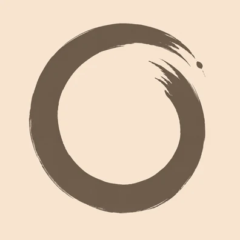

TalkEasy
Parlez. C’est écrit.
Dictez vos idées, vos messages, vos listes : la note s’écrit pendant que vous parlez. L’IA la reformule, la résume ou la transforme en liste de tâches — et vos notes se rangent sur votre téléphone.
Sans compte à créer · Pour iPhone, en français